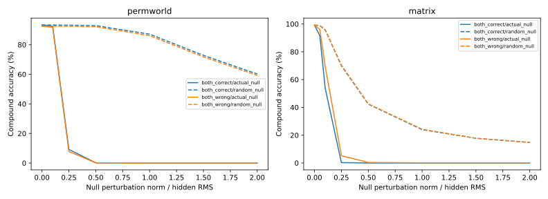

先诊断旧模型，再固定新实验。零空间保留第一步全部线性数字分数；真实中间状态仅用于诊断，不能计为推断成功。三次新源初始化并非三个新来源语料。

| 旧领域 | 配对 | 自然零空间误差跨界 | 复合准确率 |
|---|---|---|---|
| matrix | both_correct | 81.89% | 9.44% |
| matrix | both_wrong | 80.45% | 8.92% |
| permworld | both_correct | 37.44% | 36.20% |
| permworld | both_wrong | 40.57% | 29.87% |
| 领域 | 单步预测器 | 状态误差 | 复合准确率 | 配对双正确 |
|---|---|---|---|---|
| matrix | original | 0.0582 | 9.64% | 0.00% |
| matrix | affine_residual | 0.0359 | 9.64% | 0.78% |
| matrix | nonlinear_residual | 0.0055 | 50.65% | 25.78% |
| permworld | original | 0.0646 | 35.89% | 10.42% |
| permworld | affine_residual | 0.0543 | 38.75% | 13.18% |
| permworld | nonlinear_residual | 0.0450 | 45.62% | 20.05% |
2000次更新只使用单步表征，第二步与读出器固定。非线性预测器参数更多；没有错配组，不能识别关系正确性的因果作用。补保存权重与预测的同预算重放在第一次诊断结果后登记，没有调参。
| 几何损失 | 复合准确率 | 配对双正确 | 状态误差 | CKA |
|---|---|---|---|---|
| full_correct | 7.55% | 0.26% | 0.5818 | 0.0150 |
| full_wrong | 6.12% | 0.26% | 0.5543 | 0.0112 |
| null_correct | 9.64% | 0.78% | 3.4959 | 0.0100 |
| null_wrong | 9.51% | 0.78% | 3.6544 | 0.0089 |
| 配对差值 | 百分点 | 来源＋完整碰撞对95%区间 |
|---|---|---|
| full_correct_minus_wrong | +1.432 | [-1.562, 4.427] |
| null_correct_minus_wrong | +0.130 | [-2.734, 2.865] |
| interaction_null_minus_full | -1.302 | [-5.078, 2.604] |
| null_minus_full_correct | +2.083 | [-1.823, 6.641] |
| null_minus_full_wrong | +3.385 | [-0.391, 7.422] |
| 组 | 第一步总误差 | 零空间误差 | 读出行空间误差 | 自然零空间误差跨界 |
|---|---|---|---|---|
| full_correct | 0.0632 | 0.0263 | 0.0369 | 75.10% |
| full_wrong | 0.0770 | 0.0398 | 0.0372 | 78.39% |
| null_correct | 0.9996 | 0.0083 | 0.9913 | 72.16% |
| null_wrong | 0.9856 | 0.0099 | 0.9757 | 71.69% |
本轮零空间损失替代全空间项，释放了读出方向的几何约束。输出分类准确率高仍允许较大的读出方向状态误差；结果不能直接推广到保留全空间项再增加零空间权重的方案。
主要交互：［零空间正确−错配］−［全空间正确−错配］。{'native95_and_generators90': True}
| 源 | 组 | 可见准确率 | 两生成元准确率 | 损失归一化尺度 |
|---|---|---|---|---|
| 0 | full_correct | [1.0, 1.0, 1.0] | [1.0, 0.9922] | 7.70285 |
| 0 | full_wrong | [1.0, 1.0, 1.0] | [1.0, 0.9922] | 7.70285 |
| 0 | null_correct | [1.0, 1.0, 1.0] | [1.0, 0.9922] | 0.50633 |
| 0 | null_wrong | [1.0, 1.0, 1.0] | [1.0, 0.9922] | 0.50633 |
| 1 | full_correct | [1.0, 1.0, 1.0] | [1.0, 0.9922] | 8.58688 |
| 1 | full_wrong | [1.0, 1.0, 1.0] | [1.0, 0.9922] | 8.58688 |
| 1 | null_correct | [1.0, 1.0, 1.0] | [1.0, 0.9922] | 0.61626 |
| 1 | null_wrong | [1.0, 1.0, 1.0] | [1.0, 0.9922] | 0.61626 |
| 2 | full_correct | [1.0, 1.0, 1.0] | [1.0, 1.0] | 7.7163 |
| 2 | full_wrong | [1.0, 1.0, 1.0] | [1.0, 1.0] | 7.7163 |
| 2 | null_correct | [1.0, 1.0, 1.0] | [1.0, 1.0] | 0.61553 |
| 2 | null_wrong | [1.0, 1.0, 1.0] | [1.0, 1.0] | 0.61553 |
| 几何损失 | 复合准确率 | 配对双正确 | 状态误差 | CKA |
|---|---|---|---|---|
| full_correct | 36.35% | 12.66% | 0.4479 | 0.2209 |
| full_wrong | 32.89% | 7.03% | 0.4660 | 0.1383 |
| null_correct | 12.55% | 0.21% | 0.8683 | 0.0736 |
| null_wrong | 14.66% | 0.42% | 0.8278 | 0.0698 |
| 配对差值 | 百分点 | 来源＋完整碰撞对95%区间 |
|---|---|---|
| full_correct_minus_wrong | +3.464 | [0.469, 6.719] |
| null_correct_minus_wrong | -2.109 | [-4.219, -0.078] |
| interaction_null_minus_full | -5.573 | [-10.312, -1.458] |
| null_minus_full_correct | -23.802 | [-28.307, -19.115] |
| null_minus_full_wrong | -18.229 | [-21.432, -15.156] |
| 组 | 第一步总误差 | 零空间误差 | 读出行空间误差 | 自然零空间误差跨界 |
|---|---|---|---|---|
| full_correct | 0.0527 | 0.0340 | 0.0187 | 37.84% |
| full_wrong | 0.0529 | 0.0301 | 0.0228 | 37.83% |
| null_correct | 0.3735 | 0.0012 | 0.3723 | 0.08% |
| null_wrong | 0.3153 | 0.0010 | 0.3143 | 0.11% |
本轮零空间损失替代全空间项，释放了读出方向的几何约束。输出分类准确率高仍允许较大的读出方向状态误差；结果不能直接推广到保留全空间项再增加零空间权重的方案。
主要交互：［零空间正确−错配］−［全空间正确−错配］。{'native95_and_generators90': True}
| 源 | 组 | 可见准确率 | 两生成元准确率 | 损失归一化尺度 |
|---|---|---|---|---|
| 0 | full_correct | [0.9984, 0.9984, 0.9973] | [0.9953, 0.9684] | 1.23102 |
| 0 | full_wrong | [0.9984, 0.9984, 0.9988] | [0.9977, 0.9352] | 1.23102 |
| 0 | null_correct | [0.9988, 0.9992, 0.9992] | [0.9902, 0.9563] | 0.0704 |
| 0 | null_wrong | [0.9988, 0.9973, 0.9984] | [0.9984, 0.9613] | 0.0704 |
| 1 | full_correct | [0.9996, 0.9992, 0.9992] | [0.9969, 0.975] | 1.28297 |
| 1 | full_wrong | [0.998, 1.0, 0.9992] | [0.9762, 0.9664] | 1.28297 |
| 1 | null_correct | [0.9996, 1.0, 0.9996] | [0.9973, 0.984] | 0.06143 |
| 1 | null_wrong | [0.9996, 0.9992, 0.9988] | [0.998, 0.9762] | 0.06143 |
| 2 | full_correct | [0.9977, 0.9965, 0.998] | [0.982, 0.9559] | 1.19778 |
| 2 | full_wrong | [0.9965, 0.9961, 0.9969] | [0.9852, 0.9711] | 1.19778 |
| 2 | null_correct | [0.9973, 0.9969, 0.9973] | [0.9918, 0.9645] | 0.06937 |
| 2 | null_wrong | [0.9965, 0.9969, 0.9969] | [0.9914, 0.9617] | 0.06937 |
预登记：每领域三个新源种子、四组，共12次固定预算拟合；PermWorld每组20轮，矩阵900轮。只改变配对和约束空间，各组输出监督、教师、曝光、训练顺序及读出一致。PermWorld沿用旧源语料并增加全新适应/测试轨道；矩阵排除旧测试轨道，新的训练/验证/测试轨道互不重叠。不同领域仍保留原架构与双向/单向监督差异。
旧诊断第一版的自身类别产生非有限分类间隔统计，已在v2修正并保留原始记录；扰动曲线未受该问题影响。区间仅有三个来源簇，须连同逐来源效应判断。
旧误差诊断 · 状态预测器诊断 · 矩阵确认 · PermWorld确认